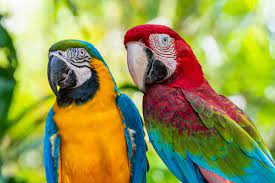

Características: Assim como todas as 18 espécies de arara possui bico forte, língua carnosa e cauda longa em forma de espada. São menos dotadas que os papagaios para a fala.
No Brasil, cinco espécies podem ser encontradas na região amazônica, no Nordeste e nas regiões do Planalto Central. As araras brasileiras verdadeiras são a arara-canindé (Ara Ararauna), a arara-canga (Ara macao), a arara-vermelha-grande (Ara chloroptera), a arara-azul-grande, e a arara-azul-de-lear A arara alimenta-se basicamente de frutos de palmeiras. A arara-azul apresenta um bico bastante resistente, o qual a auxilia na sua alimentação. Esses animais alimentam-se, principalmente, de frutos de palmeiras, tais como buriti, licuri e macaúba.nder apenas algumas palavras isoladas. Alimentam-se de sementes, frutas, larvas e insetos.
A arara-azul habita as regiões tropicais, em especial, regiões abertas do Brasil, Paraguai e Bolívia. No Brasil, embora sua população esteja bastante reduzida, são encontradas em diversos biomas, principalmente no Pantanal, onde elas ocupam áreas afetadas pelo homem, assim como bordas de cordilheiras, entre outros. As Araras traz em sua vibração o poder da manifestação da voz, do saber falar com diplomacia, da comunicação positiva, ela manifesta em nós os dons do verbo, de colocar as palavras no seu devido tempo, ela traz também as forças da compaixão e do amor, dos grandes voos também, a Arara vem nos ensinar que se mostrar.
Alimenta-se de frutos e sementes, os quais variam de uma região para outra. Alguns frutos que fazem parte da sua dieta são a manga, o tamarindo, o jacarandá e o ingá. Essas aves podem nidificar em grutas e ocos de árvores. Em algumas situações, utilizam os mesmos ninhos das araras-azuis.As araras-azuis (Anodorhynchus hyacinthinus) são animais que se destacam pela beleza, tamanho e comportamento. É a maior espécie entre os psitacídeos (papagaios, periquitos, araras, maritacas), chegando a medir um metro da ponta do bico à ponta da cauda e pesando até 1,3 kg.